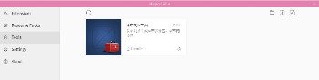
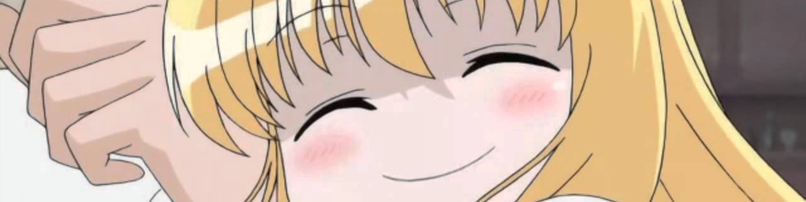
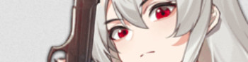
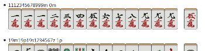
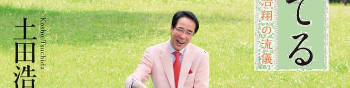
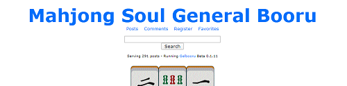
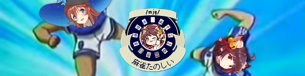

Clients Resources and Tools
Mahjong Soul
Tenhou
Hime
Others
Books, Movies and Other Media
Books
Movie nights
Obscure Mahjong Media
/mjg/ Projects
Mahjong Games Download
Games
H-Games (jp)
Clients Resources and Tools
Mahjong Soul |
|
|---|---|
Game Files
|
Resources directly ripped from the game. Emotes (updated 24-6-2020) Mahjong Soul in-game Bond voice lines (youtube) - a kind anon translated all the in-game bond voice lines added in the newest update. Updated with cat, hag and new characters. jantama.sinoa.ws - a site that lists the animations and winning effects in majsoul, but in Japanese |
Majsoul Plus |
The unofficial desktop client for Mahjong Soul. Not only does it (theoretically) run smoother than the browser app and load a static cache for fasting loading, it also allows you to mod the game! |
Story Mode |
Bond stories from the newest update. Pls share. |
Majsoul Stats |
Stats for Mahjong Soul, similar to tenhou's nodocchi. Only records games for gold rooms and above, so silver scrubs have to rank up if you want to be part of the club. Recently translated to English. |
Mahjong Soul Usercripts |
Get Violentmonkey or whatever userscript manager you like for these. Userscripts for Mahjong Soul's web version. You'll cowards don't even riichi. Now with Youtube integration, press escape to open menu and input video IDs to replace music. Create playlists by separating with commas. (Remember to unblock youtube, ytimg and googlevideo scripts and allow site autoplay in your browser) Press ctrl to Why For all your weeaboo needs, change WEEB_LEVEL in script if you feel like it |
Tenhou |
|
Minhou (aka Tenhou+) |
Tired of not being able to play the official client version? Want AMOS tiles and more flow? Want to choose whether to discard the dora or not? Tenhou+ aka minhou, includes all assets except the modded SE because anon didn't have them. Don't install the official client, extract this portable version and the game won't create a stupid C-EGG folder and figure out everything it needs already is there. Credit goes to Mino (who?) for making this old tenhou mod if you want to credit him somehow. Usage: Run launcher.exe, then Injector.exe. If you don't want to do this manually every time, consider using a batch script like this. Alternative - If catbox is too slow for you this one below is barebones but will create a C-EGG folder in your user profile and even copies of files that already exist because most nips are dumb at coding. |
Hime Mahjong Resources |
|
Game Files |
Himebros unite! Emotes (Updated 21-05-2020) |
Others |
|
Himejanki (6699) Game files |
Game files for the Hime/Majsoul Killer. |
majsoul-generator |
Python program to generate majsoul hands pictures. Forked and translated from here. It also calculates the score using this site, so it actually needs an internet connection. You need python with pillow library to run it. |

Books, Movies and Other Media
Books |
|
|---|---|
Riichi Mahjong Strategy
|
by Fukuchi Makoto Translated by bookanon A book by Fukuchi Makoto and constantly translated by a kind anon. The book is heavily focused on tile efficiency, with a highly digital (analytical) way of thinking. All of the later material about push-fold judgment and discard reading is based on good tile efficiency. |
Mahjong Books (Japanese) |
A 7zip file of a bunch of mahjong books in Japanese shared in the thread. No dekinais allowed. List of Books ASAPIN 天才雀士に麻雀のことを聞いたらバカ勝ちできた 朝倉康心 麻雀の失敗学 ＼(＾o＾)/ 三人麻雀の極意 石橋伸洋 黒いデジタル麻雀 石橋伸洋 進化するデジタル麻雀 多井隆晴 多井熱 かにマジン 日本一麻雀が強いサラリーマンの必勝法 川村晃裕 麻雀勝ち組の鳴きテクニック 菊池翔 絶対に負けない最強麻雀戦術 きよ アマチュア地方最強位が作る新麻雀マニュアル 近代麻雀 麻雀プロMリーグ選手名鑑 近代麻雀 プロに挑戦!!麻雀検定 Guzaku 定石「何切る」301選 Guzaku 傑作「何切る」300選 小林剛 スーパーデジタル麻雀 近藤誠一 大きく打ち大きく勝つ麻雀 鈴木たろう ゼウスの選択 ZERO ゼロ秒思考の麻雀 ZERO 麻雀強者の0秒思考 土井泰昭 勝つ人は知っている現代麻雀30の新常識 土田浩翔 運を育てる 独歩 鉄押しの条件 独歩 序盤の鉄戦略 中島準也 理論的思考で勝つ麻雀 二階堂亜樹 勝てる麻雀の基本 日本プロ麻雀連盟 麻雀基本手筋コレクション 馬場裕一 バビーのメンチン何切る 比嘉秀仁 強者の最近手筋100 平澤元気 絶対にラスを引かない麻雀ラス回避35の技術 平澤元気 現代麻雀の秘技相手に対応させる技術 平澤元気 よくわかる麻雀の勝ち方 福地誠 これだけで勝てる!麻雀の基本形80 福地誠 麻雀10倍勝てるテクニック 福地誠 麻雀の正解 福地誠 麻雀勝ち組の選択 福地誠 麻雀勝ち組の選択II 福地誠 麻雀テクニック 福地誠 手作りと押し引きの鉄戦術 藤田晋 仕事が麻雀で麻雀が仕事 鳳南研究所 現代麻雀の神ワザ 堀慎吾 麻雀だから君は負けるんです 堀内正人 麻雀の麒麟児の一打 水上直紀 麻雀AI戦術 みーにん 「統計学」のマージャン戦術 みーにん 知るだけで強くなる麻雀の2択 ゆうせー 実戦でよく出る!麻雀講義 Google Drive (titles fixed) Special Mentions: 301 "Established Practice" Which to cut? This book is filled with wwyd (what would you discard) examples. Is, of course, entirely in Japanese, but it's visual enough for you to understand. The explanations are all in moonrunes,sadly. The part 2, 300 "Masterpieces" is the big brain book with even harder questions. |
Growing Luck |
by Kosho Tsuchida Description from the anon who translated it: Flow book by Tsuchida. Expect luck, superstition, good manners, life advices and insight into a schizo mind. Translated with deepl, so you can understand more or less 70% without troubles, and the remaining 30% is upto your imagination. Sometimes Tsuchida refers to himself (or it is a translatingproblem) with 3rd person, try not to get too confused. |
Movie Nights |
|
Strip Mahjong
|
/mjg/ streams Strip Mahjong, because why not. Strip Mahjong: Battle Royal |
3rd /mjg/ movie night
|
1st and 2nd movie nights were the strip mahjong movies. The movies streamed during this movie night were:
|
4th /mjg/ movie night |
The 4th /mjg/ movie night. The movies streamed during this movie night (iirc) were:
|
Obscure Mahjong Media |
|
Obscure Mahjong Movies |
Old Akagi Movies Shin Janki movies English Subtitles 2nd Movie | 3rd Movie | 11th Movie Saki Live Action |
Obscure Mahjong Anime/Manga
|
It's back! A collection of obscure mahjong anime/manga shared by a kind anon in the thread. But will it stay shared this time? Let's find out! |


/mjg/ Projects
Mahjong >Soul General Booru |
Go get your hat edits, mspaint emotes and other various /mjg/ memes here. >Soul |
|---|---|
/mjg/'s Divegrass Team |
Bringing their mastery of flow from the mahjong parlor to the soccer field, /mjg/ is ready to take on the VGL, scoring hanemans and hat tricks with equal ease. Technically not a mobage general, even if 90% of us play on one. |
Hat Playlist |
Download the award-winning album for guaranteed flow. |
Mahjong Soul Telegram Stickers |
Sticker packs for telegram users. |
/mjg/ Character Survey |
Concluded on the 15th of January, 2020, 112 anons participated in this survey about their mahjong waifus. |
/mjg/ sings Nantoka Nare
|
Pure unadultarated autism.
|
The analysis of /mjg/ questionarie - questions and answers |
Listen to kurwa address the answers from the general questionarie, as well as talk about the future of tourneys, leagues and whatnot for over an hour. |
/mjg/ Pastebin
|
An archive of copypastas and smut from /mjg/, because they deserve to go to the history books. |


{kind=link}
Mahjong Games Download
Games |
|
|---|---|
Touhou Unreal Mahjongwiki / official site |
Touhou plus Mahjong. Chock-full of superpowers, cute 2hus and everyone's favorite mode, aotenjou! There's also a switch port available. |
Saikyou no Mahjong 3D |
A very cute but effective solo game for the PC that will run on toasters. You can select the different AI who will operate slightly differently. All the downloads are already patched in English. |
H-Games (jp) |
|
Saki Datsumono Jan咲だつもの雀vndb |
Kyoutarou's Mahjong skills are as low as ever, so Hisa decides that a little "extra motivation" is in order. |
Datsu! Toraburu Jan脱!とらぶる雀vndb |
La**, Haru**, and Ya** are infected by aliens parasites who feed on pleasure. To purge these parasites, you must beat them in any game to exhaust them into starvation for sex. So you, as Ri**, must play a game of undressing mahjong and have sex with them! |
Dragon Mahjong 2 Plus |
Based on the popular vidya Dragon Quest, you play mahjong and handhold your favorite characters! mexa | catbox: 1 2 3 | latest patch |
Dragon Mahjong 3 Plus - Complete Edition |
It's 3 games in one. Same series as above, but more handholding. hentai-sharing | catbox: 1 2 3 4 5 6 7 8 9 10 11 12 13 14 | latest patch |
Dragon Mahjong Evolution |
This picture should be enough to convince you to play this game. anime-sharing | catbox: 1 2 3 4 5 6 7 | latest patch |
Sacrifice ~Sutehai no Yukue~SACRIFICE ～捨牌の行方～vndb / tsubasa-space |
It's a Saki clone but in a darker setting where Saki is a dumb idiot tricked into playing mahjong in a place where losing means being treated as a commodity. Rin is best girl. Also it's 4 player mahjong. anime-sharing | hentai-sharing | catbox: 1 2 3 4 5 |
Grand Order Mahjongg |
Play mahjong and then have intense exercise activities with your favorite FGO girls and boy. hentai-sharing | mega | latest patch |
Granblue Mahjongg |
Play mahjong and then have intense exercise activities with your favorite Granblue girls. hentai-sharing | mega | latest patch |
Fullaniフルアニleaf aquaplus site |
Fully Animated Mahjong. You get to play mahjong with the cute girls in a fully animated fantasy world. Walkthrough torrents pastebin |
Final Fantasy Mahjong PLUS究極幻想麻雀PLUScover |
Final Fantasy and mahjong. You know how this works by now. katfile: 1 2 | catbox: 1 2 3 4 5 6 |
{kind=link}
{kind=link}